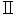
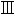
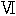
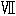
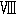

※［＃Ｉ四つ、217-2］


文字は星のやうにあざやかな金
その文字板は死のやうにまつ黒
ぐるりは花と葉との浮彫
さてその振子はと言へばそれは
風にゆれるたつた一房の葡萄の実
熟れて命のやうに甘いたつた一房
このよき細工人は無名でこそあつたが
ヱピキユラスほどの賢者だつた
美しい教はつつましいから
人には知られずに三十年の間
場末の時計屋で塵まみれだつた
これは私がその時計を買った時に、うれしさのあまりにつくった詩であります。地震の年のしかもあの怖ろしい事の五六日前に、わたしは、その頃いた大森の町のガアドのわきの古い時計店でそれを手に入れたのです。その時それは本当に塵まみれでした。店の主の話では二十五年も三十年近くもうれ残っているのだという事でした。多分うそではありますまい。その時計店というのがかなり古い店らしく、主人の話では彼の父が横浜で店を開いたのだそうです。時計屋などという新奇な――当時としてはさぞハイカラな店をやっただけに、その人というのがやはり好事家だったそうです。そんなことを話しながら四十位のそこの主人は、ふみ台などを持ち出して壁の上の高いところにあるその時計を、
「これもおやじの物好きの形身でさ、いつ買い入れたものだか、あたしが覚えてからでも二十五年や三十年にはなりますよ。……え、いくらででも買ってやって下さい。……さようですな八円ぐらいではいかがでしょう。」
わたしは時計が気に入っているところへ、時計屋の言葉も気に入ったし、値段も気に入った。喜んで買う約束をして、しかしそれにしたって機械は大丈夫だろうなと念を押すと、売手は確実にうなずいて、
「大丈夫ですとも。何しろ、しかも、あまり長い事ほっ放してありますから、一度掃除をして油をさしてから――さよう、明後日御とどけ致しましょう。ただね、予め御断りして置きますが、こいつは風の当るような場所へかけると駄目ですよ。振子がこのとおり外へぶらさがって出て居るのですからね。何しろ洒麗た細工だなあ。」
そう自分の売物をほめたのも買うときまったわたしには、愉快でした。それでわたしも店さきを見まわしたりして、そこに掛っていた古びた銅板画の額などをほめたものです。全くちょっと見あたらないしにせらしい、それも落ちぶれたしにせらしい床しさのある店でした。
そこで肝腎の時計だが、それは約束どおり三日目のひるすぎに、暑いさかりを店の主人が自分で運んできて、それを掛ける釘までうってちゃんと壁の真中へかけて行ってくれたのでした。時計は楽しそうに振子を動かしています――これは風にゆれる一房の葡萄の実。熟れて命のように甘いたった一房の葡萄の実――わたしは、その時計を半日見とれていて夜になると、前に言ったような詩みたようなものを書いたのです。ともかくもうれしかったのです。
そこへ持って来てあの地震！
あとでしらべてみると、私の時計は壁から落っこちてはいなかったけれど、彼は落っこちまいと精一杯努力して居るうちにとうとう発狂してしまっていた。わたしはそれを手をつくして直させたが、彼の狂いはどうしても本当には全快しなかった。彼は結局半気違いだった――出鱈目の時を打ち響かす。わたしはあきらめてしまって、彼の打つにまかせているが、それでも夜半に二十四もたてつづけに打つ時には、近所の手前も悪いし、それに第一少しばかり気味悪くもあります。
或る日、客が来ている時にあいつは十三時を打ちました。わたしは困ってしまって説明をしたのです。
客よ、おどろくな
十三時だ！ 時には
二十三時も打つ
だが針を見ろ十一時だ
このキテレツな時計こそ
部屋の主 とおんなじだ
かんじょうは出鱈目の
メチャクチャだが
理性の針は正しいよ
十三時だ！ 時には
二十三時も打つ
だが針を見ろ十一時だ
このキテレツな時計こそ
部屋の
かんじょうは出鱈目の
メチャクチャだが
理性の針は正しいよ
別の或る日の事でした。やっぱり客が来ていました。あいつはこの日いつの間にかサボって止っていたのです。そこでわたしは客との話がとぎれた時、客に時間を聞いて、いきなり椅子の上に立ちあがりあいつにぜんまいを巻き始めました。それから客に対して、それが半気違いのダダイストだということを手短かに説明しました。というのはあいつはぜんまいの強い時にはきっと二十四を二度もつづけて打つ癖があるからです。彼のそういう無作法を――全く世に有るべからざる無作法を、前以て客に謝して置くが主人たるものの義務だとわたしは考えたからです。わたしは話つつねじをかけました。調子に合せて歌い出したのです――
客よ おどろくな
十三時だ。時には
二十三時も打つ
だが針を見ろ十一時だ
このキテレツな
と！ 言いかけたその瞬間です。十三時だ。時には
二十三時も打つ
だが針を見ろ十一時だ
このキテレツな
時計は一大叫喚を上げたかと思うと、私の指にいやというほど噛みついたのです。
ぜんまいの鍵を投げすてると、わたしは自分の親指に垂れている血を見ました。
約一分の後、静にわたしは回想し得たのですが、調子にのってわたしはぜんまいを捩じ過ぎたらしい。バササン、ザン、ボロン！ 真似がたいあの音は時計の心臓の裂けた音響だった。時計は心臓の裂けた瞬間に、ぜんまいの鍵をわたしの意志とは反対にこぜ返した。鍵はわたしの指に喰い込んだのです。
わたしの様子に愕いて椅子から飛び上った客に、わたしは冷静に言った――
「キテレツと言われたのが気に入らなかったらしい。この時計は細君のヒステリイのように怖い。ねえ、君！」
客なる独身の友は笑っています。わたしの言葉の真意を知らぬのです。尤も、諸君よ、わたしの善良なる細君はヒステリイでは無いのです。万歳！